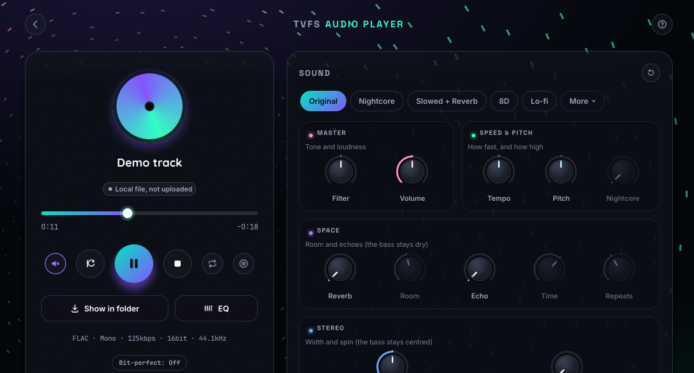
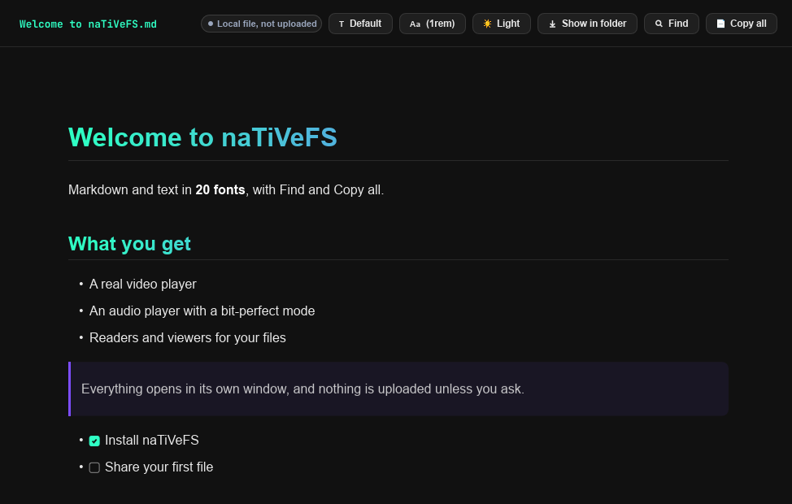
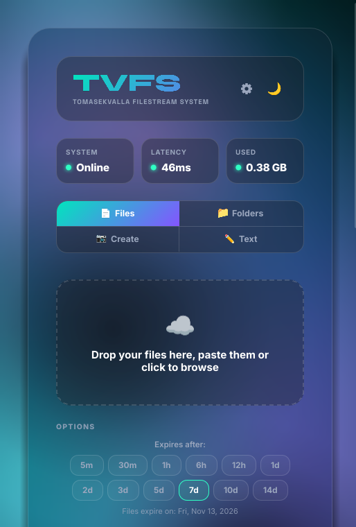

Upload, share and open everything on TVFS with real players, in one small app. No Electron, no webview: built in Rust, silent in the tray when you don't need it.
Free and open source, GPL-3.0. Windows, Linux and macOS.
Paste it into a terminal. It finds the right package for your system and installs the newest signed release.
irm https://raw.githubusercontent.com/TomasekValla/naTiVeFS/main/install/windows.ps1 | iexIn PowerShell, no administrator rights. Prefer a normal installer? Get naTiVeFS-windows-x64-setup.exe. SmartScreen may warn once, because the app has no paid certificate: More info, then Run anyway.
curl -fsSL https://raw.githubusercontent.com/TomasekValla/naTiVeFS/main/install/linux.sh | shArch and CachyOS, Debian, Ubuntu and Mint, Fedora and RHEL, openSUSE. Anywhere else it installs into ~/.local/bin. AppImage is on the releases page.
curl -fsSL https://raw.githubusercontent.com/TomasekValla/naTiVeFS/main/install/macos.sh | shApple Silicon, best effort: built but not yet tried on a real Mac. Audio opens in the browser for now.
curl -fsSL https://raw.githubusercontent.com/TomasekValla/naTiVeFS/main/install/build-for-this-pc.sh | shirm https://raw.githubusercontent.com/TomasekValla/naTiVeFS/main/install/build-for-this-pc.ps1 | iexLinux first, Windows second. Builds for your exact processor, cleans up and leaves only the app. You need Rust, it takes a while and it doesn't update itself, so for most people the normal install is the better choice. Full guide.
The same uploads and the same look as the web, plus what only a real app can do.
The full TVFS rack and EQ, or every effect off and the file's exact samples straight to your DAC.
libmpv with hardware decoding, VLC-style keys, subtitles, audio tracks and speed from 0.1× to 8×.
Parallel chunks, resume after a dropped connection, and Upload to TVFS right in your file manager.
Markdown and text in 20 fonts with Find, images with animations, each in its own window.
Open anything from your disk in the same tools. Nothing is uploaded.
An optional link router sends TVFS links to the app and every other link to your own browser.
Record straight into the upload queue, voice notes in Opus, AAC or FLAC.
Player controls and quick actions in the tray, and nothing redrawn while nothing changes.
Signed, downloaded in the background, and never a forced restart.
Real screenshots of the app.



The same window size, the same file, measured over the whole process tree. Lower is better.
| Measured | naTiVeFS | Chrome | Zen |
|---|---|---|---|
| TVFS main page: CPU, % of one core | 7.2 % | 19.0 % | 149.8 % |
| TVFS main page: memory | 281 MB | 406 MB | 1263 MB |
| TVFS main page: GPU | 1.3 % | 2.4 % | 16.0 % |
| 1080p60 video: CPU, % of one core | 9.3 % | 8.9 % | 116.1 % |
| 1080p60 video: memory | 491 MB | 677 MB | 1005 MB |
| 1080p60 video: GPU | 11.0 % | 9.6 % | 11.0 % |
| 4K image: CPU, % of one core | 0.0 % | 0.3 % | 1.7 % |
| 4K image: memory | 371 MB | 298 MB | 750 MB |
| 4K image: GPU | 0.0 % | 0.0 % | 0.0 % |
| Measured | naTiVeFS | Chrome | Zen |
|---|---|---|---|
| TVFS main page: CPU, % of one core | 10.8 % | 27.4 % | 78.7 % |
| TVFS main page: memory | 118 MB | 581 MB | 663 MB |
| TVFS main page: GPU | 5.2 % | 14.8 % | 16.9 % |
| 1080p60 video: CPU, % of one core | 11.0 % | 12.0 % | 28.8 % |
| 1080p60 video: memory | 310 MB | 536 MB | 664 MB |
| 1080p60 video: GPU | 23.0 % | 14.4 % | 19.7 % |
| 4K image: CPU, % of one core | 0.0 % | 0.8 % | 15.6 % |
| 4K image: memory | 153 MB | 528 MB | 592 MB |
| 4K image: GPU | 0.0 % | 0.1 % | 0.0 % |
Not everything goes our way: the browsers use a little less GPU for video on Linux, and Chrome less CPU for video and less memory for an image on Windows. naTiVeFS is still young, and more optimisation is coming. Each number is the median of three 30-second runs after a 15-second settle, in a clean browser profile with one tab and no extensions, counting every process of the app or browser. GPU adds up all engines, without the desktop compositor. Memory is private memory on Windows and PSS on Linux, so compare within one table, not between them. The tuned build for your PC measured about the same as the normal one, so we don't promise it is faster.